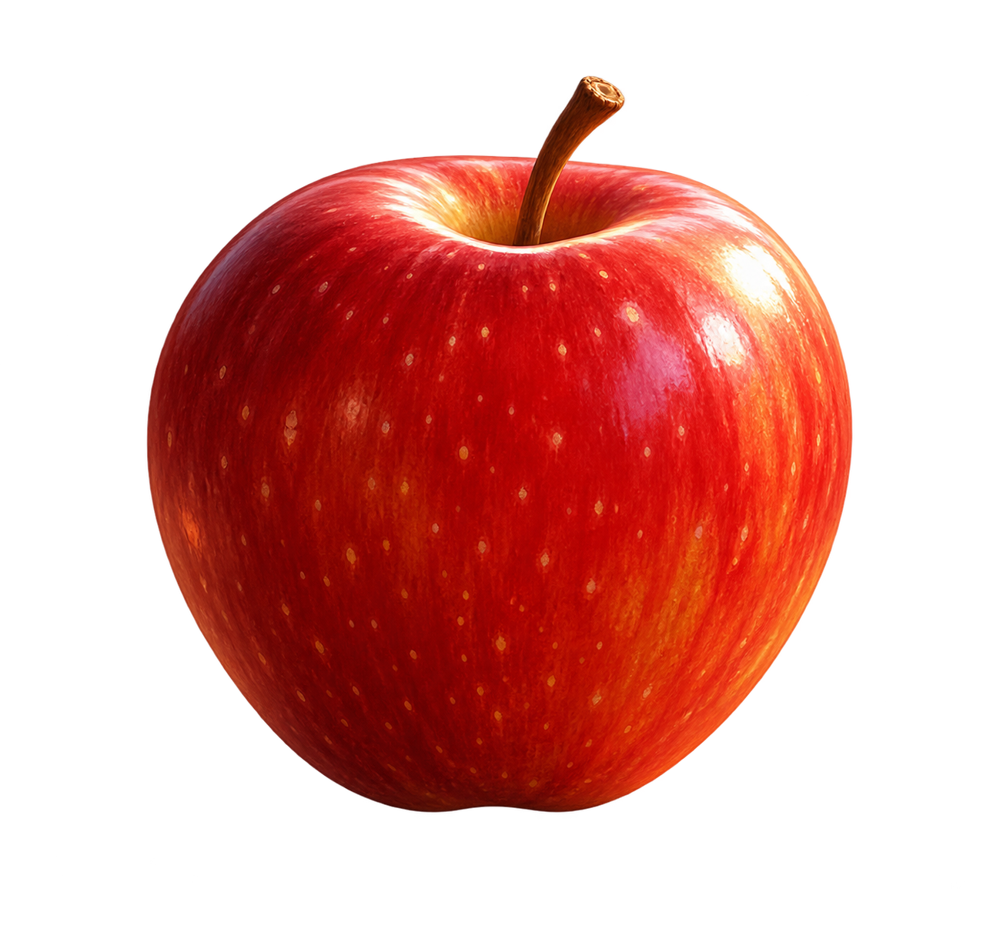

今天完成 0 件事
本周体验 0 天
一杯喜欢的咖啡，堂食或带走。
和 Mia 打声招呼，试着点一杯咖啡。
需要优化的表达会留在这里。
在这里，把英语用起来。
0累计经验
表达与积累
最近 5 次练习
开始一段对话，就会留下第一条足迹。
资料与进度保存在当前浏览器

听完后，直接开口回应
这一关会给你足够帮助。说一个词也能继续，最后再试着连起来。
用你的真实经历回答，没有标准答案。需要思考、澄清或换个话题，都可以直接说。
听不懂，随时开口问Luma。直接说「什么意思？」也可以。
一个词、短句，都可以。她说话时你也能开口，不用等提示音。
你完成了真实点单。下一步是减少帮助，再做一次。
复习时，试着用自己的话表达同样的需要。